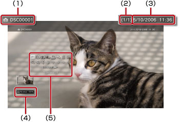

Foto > Bruke kontrollpanelet
Bruke kontrollpanelet
Utfør en rekke operasjoner ved hjelp av kontrollpanelet på skjermen. Kontrollpanelet kan vises eller skjules med  -knappen.
-knappen.
Skjermmodus

Endrer størrelsen på bildet som vises på skjermen.
| Normal | Angi for å vise bildet slik at det passer med skjermstørrelsen uten å endre dimensjonene. |
|---|---|
| Zoom | Angi for å vise bildet i fullskjermmodus uten å endre dimensjonene. Noe av den øverste og den nederste delen av bildet beskjæres. |
Tips
Det kan hende du ikke kan endre skjermmodus, avhengig av bildefilen.
Skift effekt
Endre metoden for å skifte bilder.
| Normal | Angi for å erstatte bildet som vises, med det neste bildet. |
|---|---|
| Lysbilde | Angi for å erstatte bildet som vises, med det neste bildet som i en lysbildefremvisning. |
| Fade | Sett for å bruke fade-effekten for å bytte til neste bilde. |
Trimming
Slett unødvendige deler på toppen, bunnen, venstre eller høyre side av et bilde. Bruk venstre og høyre spak på den trådløse kontrolleren for å velge det området som du vil beholde. Bruk venstre spak til å bla i hvilken som helst retning og bruk høyre spak for å zoome inn eller ut. Trimmede bilder blir lagret med et annet filnavn.
Tips
Bare bilder som er lagret i systemminnet på PS3™-systemet kan beskjæres.
Legg til spilleliste
Legg et bilde til en spilleliste.
Tips
Kun bilder som har blitt lagret i systemminnet kan legges til i en spilleliste.
Skriv ut
Skriv ut et bilde med en skriver.
Tips
For å skrive ut må du først konfigurere skriveren i [Skrivervalg] under  (Innstillinger) >
(Innstillinger) >  (Skriverinnstillinger).
(Skriverinnstillinger).
Sett som bakgrunn
Sette det bildet som vises på skjermen som bakgrunn. Bildet settes nøyaktig slik som det vises på skjermen, enten det er forstørret, redusert eller rotert.
Tips
- Når du ikke bruker bakgrunn, juster innstillingen under (Innstillinger) >
 (Tema Innstillinger) > [Bakgrunn].
(Tema Innstillinger) > [Bakgrunn]. - Kun ett bilde kan settes som bakgrunn til en hver tid. Hvis du velger et annet bilde, vil det nåværende bli overskrevet.
Slett
Slett bilder.
Tips
Kun bildefiler som er lagret i systemminnet kan slettes.
Vise
Vis informasjon om et bilde. Hver gang du trykker på  -knappen, veksles det mellom skjermbildet med Exif-informasjon, skjermbildet med informasjonsfelt og skjermbildet uten noe tilleggsinformasjon.
-knappen, veksles det mellom skjermbildet med Exif-informasjon, skjermbildet med informasjonsfelt og skjermbildet uten noe tilleggsinformasjon.
Et skjermbilde med informasjonsfelt

(1) |
Bildenavn |
|---|---|
(2) |
Bildenummer / totalt antall bilder |
(3) |
Dato og klokkeslett for lagring |
(4) |
Statusikon |
(5) |
Kontrollpanel |
Zoom inn / Zoom ut

Zoom inn eller ut for å gjøre et bilde større eller mindre. Du kan bruke venstre spak på den trådløse håndkontrollen til å bla i en retning, og den høyre spaken kan brukes for å zoome inn eller ut.
Rotér til venstre / Rotér til høyre
Roter bildet 90 grader til venstre eller til høyre.
Opp/ned/venstre/høyre
Flytt bildet for å vise skjulte deler, for eksempel når (Skjermmodus) er satt til [Zoom].
Forrige/Neste
Vis forrige eller neste bilde.
Slideshow
Vis hvert bilde i rekkefølge automatisk.